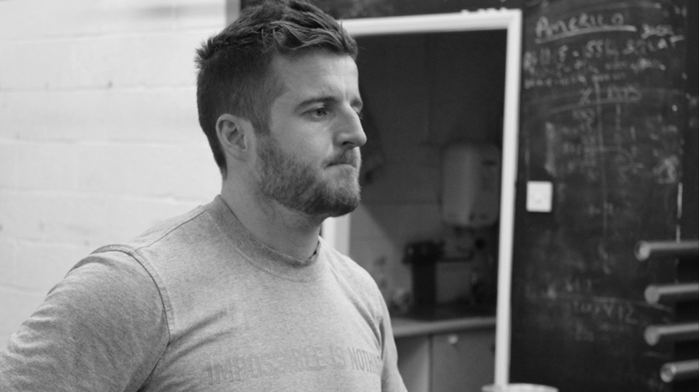
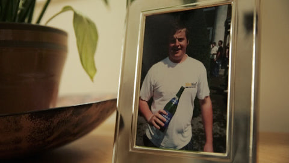
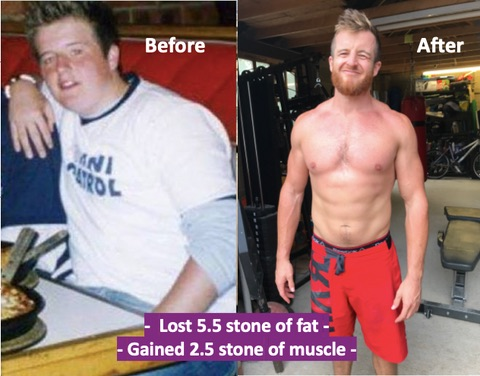

How to successfully lose weight, and keep the weight off

Having been a coach in the fitness industry for 16 years I can hand on heart say that most people, including myself, don’t generally have a lack of knowledge to achieve their goals. We largely know what to eat, we know we should exercise a few times a week and generally stay active, and we know we should sleep well, drink lots of good quality water and live a lifestyle conducive to good health. Give or take a few details, the fundamentals of health I firmly believe are understood by most, if asked directly.
So, if we kind of know what to do, what’s the issue?
The make or break aspect of getting started, keeping going, and maintaining your results is your mindset. In fact, can anyone disagree with me that success in any area of life, be it your body, your relationship, your career, anything, comes down to your mindset?
Sure you might have a knowledge gap, you might need to know a few more things, but if you have the right mindset you go looking for the answers, you keep trying, and eventually find what you are looking for. With the right mindset, the right whys, the right inspiration and motivations, you can achieve anything.
I’ve been successful with my body, successful with my career, successful with my relationship (I think, you’d better check with the wife though), and you can too. I feel I’ve been successful because I’ve firstly chosen to, then spent time and effort building my mental fortitude to sustain those changes and create habits that constantly support the outcomes I seek. Anyone can get a diet and training plan, heck there are many on the internet you can simply research or download one (lets ignore their quality for the moment and just work with the sentiment).
Your physical transformation
Let’s take the goal of transforming yourself physically. Your success simply comes down to your mindset approaching your transformation, during your transformation, and after it. If you want to go on a diet for 8 weeks that’s fine, do it, but what about the diet after the diet? The one you need to keep for life to be healthy, strong and maintain your weight.
It's statistically true that most people fail with their diets. But why? All diets work, period. They all work by putting you into a calorie deficit. Whether they cut carbs, or fat, or make you fast for 2 days a week they all put you into a sub calorie state which causes fat loss. There is no other magic with diets, it is all about a calorie deficit, eat less than you burn. Which has been known for many years, companies and people just like to try and package it up into some new-fangled way that ultimately leads to the same result.
Now many of us know this deep down, and if you didn’t know this, you do now. So our success is now hinged on a few other things. The diet you embark on needs to be sustainable. We need to see ourselves making these changes not just for 4-6 weeks, but for life, otherwise what’s the point? We need the right environment to foster and maintain these changes in our habits, and we need to know our reasons why we are making these changes so we are empowered and motivated to keep them.
Desire
People often ask me “Ben, how do you have and maintain such a strong desire to hit the gym, eat well and go to bed on time”. In my head I’m wanting to say back “How can you not”. But I don’t. I opt for a longer more PC answer that helps.
The reason I say this is because you only get one body. And let me tell you from a man who’s been obese, been bullied, suffered with ADHA, IBS, asthma and eczema. As a result I have zero desire to return to that life. I love what I have now, I love how I feel, why would I go backwards?

I value my health so much today that I will say no to anything that does not serve my primary goal to be healthy, strong and happy. Thus, I am going to deeply question why you cannot get to this place today. Then, I’m going to help you get to this place.
Ask yourself right now reading this article, what’s stopped you achieving your body transformation before? It might have been the diet or the training, it might not have been sustainable, you might have gone too hard too soon, you might have gotten low on energy or got ill or been tripped up by something. And that’s fine, all of that is easily solvable, if you’re willing to sit back, be a bit more objective and make a newer, better plan for yourself.
In my experience most trip up because they haven’t made changes to their environment and home life long term to support the initial changes that were made, they haven’t had that long-term shift in their mindset to want to sustain those changes and not go back, and they haven’t moved past the original blocking factors that keeps them overweight, tired and unmotivated. They just pushed them aside for the 6 week diet, but they are still there, waiting, needing to change too.
Change
You can’t keep doing the same thing and expect a different result, that’s the definition of insanity. Change is needed, not just for 8 weeks, for life.
Don’t get me wrong there is a lot in this world to make us overweight. Many of us are living very sedentary lifestyles, many of us are short on time or have busy work and family lives, many of us are not in the ideal environment, but let’s be honest, we’ve all got stuff going on and we can all make whatever excuses we want. But that doesn’t change what needs to be done.
So make whatever excuses you want, it won’t change anything.
As a coach I can only help someone as much as they are willing to help themselves. I’m great at writing and coaching a plan, I’m great at helping people with their mindset and blocking factors, but that person has to want to change, without that we are destined to fail, you are destined to fail. Even if that desire is small, I can work with that, you can work with that.
Taking ownership
The biggest mindset shift I’ve ever had, and this shift needs to happen in you for you to be successful, in my opinion, is that you choose to take ownership of everything in your life. You need to choose to own the situation, or how you think about it. When you take ownership you take control. Too many people are living in a state of no control because you blame others or the world for the way things are.
That’s false. We all have control of the situation or how you feel about the situation, if you choose to take control. This is extreme ownership, are you ready to take it? To take extreme ownership of your life, how you feel about things, and ultimately how you take action?
This might all seem idealistic and nice, and you might be thinking “yeah yeah Ben, that’s easy for you to say, try living in my shoes for a day”. If you’re thinking that right now that is the problem right there. Take ownership. Today. Now.
I did…

When you take ownership you take control. Too many people are trying to find the perfect diet, get the perfect balance, do the perfect workout, all while comparing themselves to others (usually on social media). Step back, stop trying to live in someone else’s shoes and live in your shoes, cause they’re the only ones you’ve got and you’re not getting any others. Even when they’re old and worn out, you’ve still got the same shoes, you don’t get new ones, all you can do is sew up the holes, give them a wash and take better care of them so they last longer and you feel better wearing them.
We’ve all got our own problems, our own challenges, our own things that hold us back, no one’s life is perfect, so stop wishing it was or hoping for a divine intervention on your circumstances and get stuck into making your situation better.
Be proud of your shoes, just get out your sowing kit and let’s give them a wash and sparkle.
Don’t beat yourself up
I can’t straighten my right arm, I’ve had many health challenges over the years, genetically my body struggles to put on muscle mass, I grew up with the world’s worst posture which made some things really tough, I got bullied when I was young, I used to be obese so I’ve a bit of lose skin kicking about… I could go on about my woes…
But what’s the point, where does it get me living in pain, living in what if’s, living in excuses, living life as a victim of my circumstance?
It gets me nowhere, it disempowers me.
So instead I take ownership and do what I can, and over time I build up to be able to do more. So while there are many things I cannot do, cannot achieve, cannot perform, there is still much I can do, and as a result of not making excuses, working to improve every day, focusing on the good stuff I can make progress, and you can too.
Day to day I’m happy with my body. I have 13-14% body fat, I’m as strong as I need to be, sleep well, have good balance, enjoy my training, and enjoy a balanced and varied diet. I don’t compare myself to anyone else. I do it for my own reasons.
So I ask you today, what needs to change with your mindset to get the ball rolling? The penny doesn’t have to drop for you today, I’m not asking that. But it has to start, you have to start to make decisions and choices that will start to move you one step closer.
It's simple, not easy
We’re not trying to jump up a mountain here (which most do, no one deserves success in a few short weeks, so stop trying to get it), we’re just trying to take one step, to start, to tie up the laces on your shoes and take the first step out the door. Then we are able to build momentum, you then build strength and confidence from the initial progress you get, and then that’s how we become unstoppable.
I’m not telling you it’s going to be easy, but it is simple.
And it has to start with you making the decision to take one positive step forward without an excuse, then we can build on that.
So my question to you today is… are you going to choose to change, or make excuses you cannot change?

If you are ready, and you want my help, the best place to start is my book “How to Live an Awesome Life”, a swiss army knife book to optimising all aspects of you, and living the life you want to live. Check it out here: How to live an Awesome life